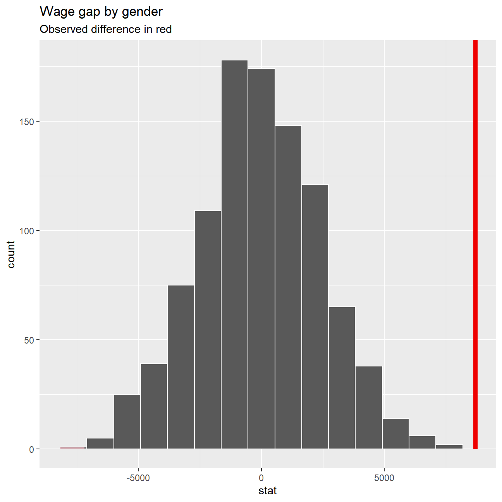
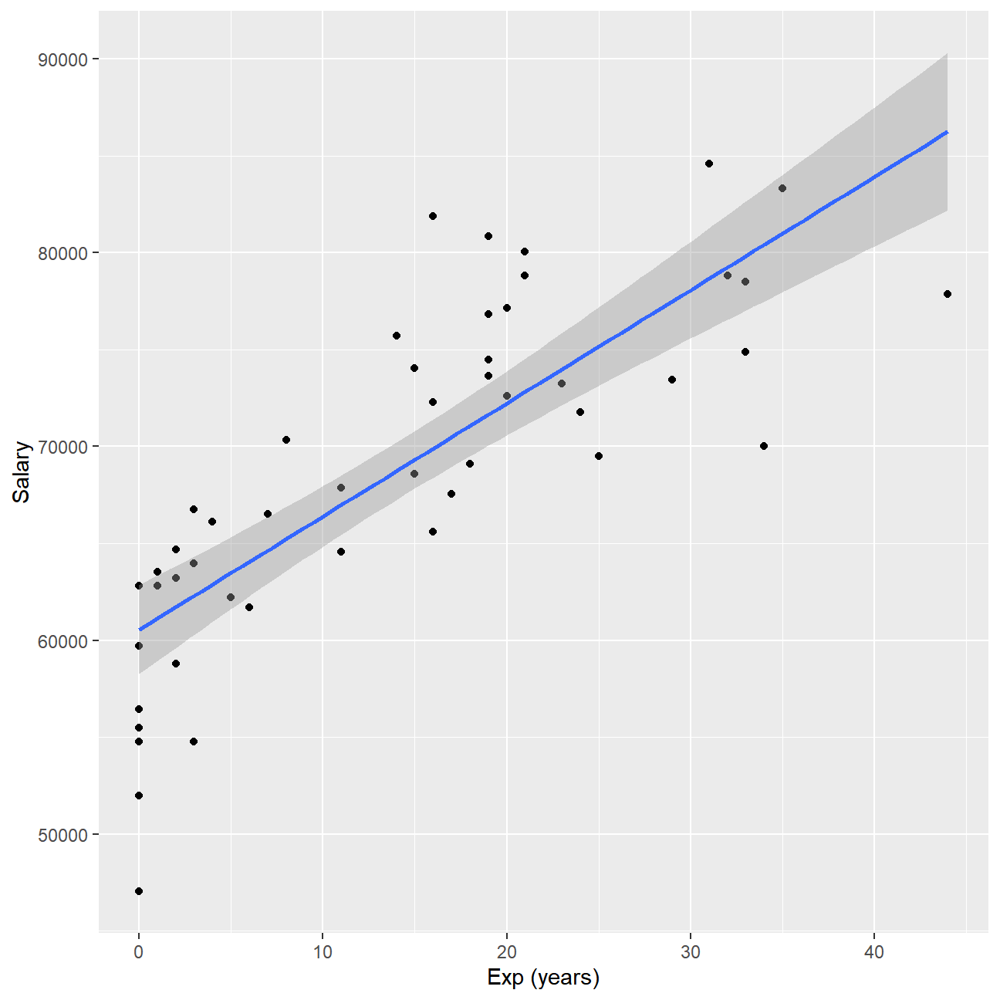
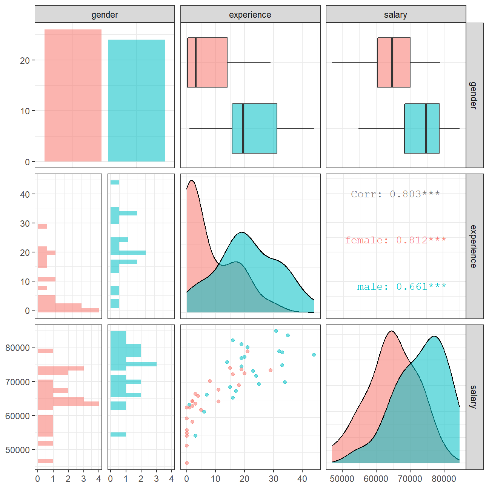

Session 6: Homework 3
Omega Group plc- Pay Discrimination
At the last board meeting of Omega Group Plc., the headquarters of a large multinational company, the issue was raised that women were being discriminated in the company, in the sense that the salaries were not the same for male and female executives. A quick analysis of a sample of 50 employees (of which 24 men and 26 women) revealed that the average salary for men was about 8,700 higher than for women. This seemed like a considerable difference, so it was decided that a further analysis of the company salaries was warranted.
Loading the data
omega <- read_csv(here::here("data", "omega.csv"))
glimpse(omega) # examine the data frame## Rows: 50
## Columns: 3
## $ salary <dbl> 81894, 69517, 68589, 74881, 65598, 76840, 78800, 70033, ...
## $ gender <chr> "male", "male", "male", "male", "male", "male", "male", ...
## $ experience <dbl> 16, 25, 15, 33, 16, 19, 32, 34, 1, 44, 7, 14, 33, 19, 24...Relationship Salary - Gender ?
Is there a significant difference between the salaries of the male and female executives?
# Summary Statistics of salary by gender
mosaic::favstats (salary ~ gender, data=omega)## gender min Q1 median Q3 max mean sd n missing
## 1 female 47033 60338 64618 70033 78800 64543 7567 26 0
## 2 male 54768 68331 74675 78568 84576 73239 7463 24 0# Dataframe with two rows (male-female) and having as columns gender, mean, SD, sample size,
# the t-critical value, the standard error, the margin of error,
# and the low/high endpoints of a 95% condifence interval
sum_stat <- omega %>% group_by(gender) %>%
summarise(mean=mean(salary),
sd=sd(salary),
samp_size=n(),
t_crit= qt(.975,samp_size-1),
se=sd/sqrt(samp_size),
MoE=t_crit*se,
lower_ci_95 = mean-se,
upper_ci_95 = mean+se)
sum_stat## # A tibble: 2 x 9
## gender mean sd samp_size t_crit se MoE lower_ci_95 upper_ci_95
## <chr> <dbl> <dbl> <int> <dbl> <dbl> <dbl> <dbl> <dbl>
## 1 female 64543. 7567. 26 2.06 1484. 3056. 63059. 66027.
## 2 male 73239. 7463. 24 2.07 1523. 3151. 71716. 74762.Explanation: The summarized stats show that mean salary is lower for women compared to men salaries. The confidence intervals do not overlap and the difference is significant with 95% confidence..
Let’s run a hypothesis test to be absolutely certain……
# hypothesis testing using t.test()
t.test((omega %>% filter(gender=="male"))$salary,(omega%>%filter(gender=="female"))$salary)##
## Welch Two Sample t-test
##
## data: (omega %>% filter(gender == "male"))$salary and (omega %>% filter(gender == "female"))$salary
## t = 4, df = 48, p-value = 2e-04
## alternative hypothesis: true difference in means is not equal to 0
## 95 percent confidence interval:
## 4420 12973
## sample estimates:
## mean of x mean of y
## 73239 64543# hypothesis testing using infer package
set.seed(1234)
simu <- omega %>% specify(salary~gender) %>% hypothesize(null="independence")%>%generate(reps=1000,type="permute")
sim_delta_mean <-simu%>% calculate(stat="diff in means", order=c("male","female"))
real_delta_mean <- omega %>% specify(salary~gender)%>% calculate(stat="diff in means", order=c("male","female"))
sim_delta_mean %>% visualise (obs_stat = real_delta_mean, direction="both")+labs(title="Wage gap by gender",subtitle="Observed difference in red") 
Explanation: The observed gap is within the interval so we can reject the null hypothesis. Men and women do not make the same amount of money. This could be attributable to a variety of factors such as: Are there more men in sectors that pay more (eg: tech, finance) and this is skewing the data? We could go deeper to analyze the proportion of men and who choose STEM degrees and what the average pay for a STEM graduate is. Furthermore, specitic to Omega, are there more men in senior positions? Department-level data should be used versus the organization as a whole.
Relationship Experience - Gender?
Is there a correlation between Experience on the job and gender?
# Summary Statistics of salary by gender
favstats (experience ~ gender, data=omega)## gender min Q1 median Q3 max mean sd n missing
## 1 female 0 0.25 3.0 14.0 29 7.38 8.51 26 0
## 2 male 1 15.75 19.5 31.2 44 21.12 10.92 24 0Explanation: The difference in experience between male and female executives may account for the difference in wages but requires testing to confirm the correlation.
Relationship Salary - Experience ?
What’s the relationship between salary and experience?
ggplot(omega, aes(experience,salary)) + geom_point() +geom_smooth(method=lm) +
labs(x="Exp (years)", y = "Salary")
Let’s check correlations between the data
omega %>%
select(gender, experience, salary) %>% #order variables they will appear in ggpairs()
ggpairs(aes(colour=gender, alpha = 0.3))+
theme_bw()
Explanation: The experience has a stronger correlation with salary for female group.